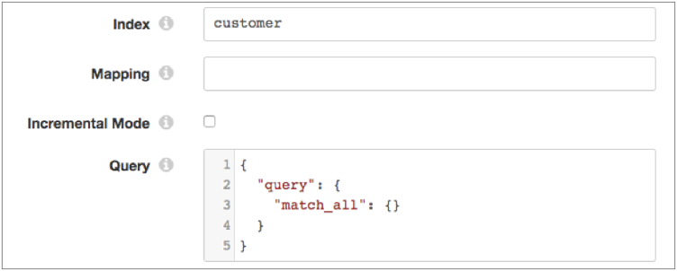

Elasticsearch
The Elasticsearch origin is a multithreaded origin that reads data from an Elasticsearch cluster, including Elastic Cloud clusters (formerly Found clusters). The origin generates a record for each Elasticsearch document.
When you configure the Elasticsearch origin, you configure the HTTP URI used to connect to the Elasticsearch cluster and specify whether security is enabled on the cluster. You configure the origin to run in batch or incremental mode.
The origin uses the Elasticsearch scroll API to run a query that you define. A query can retrieve large numbers of documents from Elasticsearch. This allows the origin to run a single query and then read multiple batches of data from the scroll until no results are left. You configure a scroll timeout that defines the amount of time that the search context remains valid.
When the pipeline stops, the Elasticsearch origin notes where it stops reading. When the pipeline starts again, the origin continues processing from where it stopped - as long as the scroll timeout has not been exceeded or the origin is not configured to delete the scroll when the pipeline stops. You can reset the origin to process all requested documents.
When you configure the Elasticsearch origin, you specify the maximum number of slices to split the scroll into. The number of slices determines how many threads the origin uses to read the data.
Batch and Incremental Mode
The Elasticsearch origin can read data in the following modes:
- Batch mode
- In batch mode, the origin reads all data returned from the Elasticsearch query, and then the pipeline stops. By default, the origin reads in batch mode.
- Incremental mode
- In incremental mode, the origin performs an initial read of all the data returned from the Elasticsearch query, then the origin periodically runs the query again to check for new data. In incremental mode, the pipeline runs continuously so it can repeat the query at regular intervals.
- To use incremental mode, you define the amount of time that the origin waits between queries, and you configure the offset field and initial offset value.
- The origin uses an offset field and initial offset value to determine where to start reading data. By default, the offset field is defined as a field named timestamp. You can define any Elasticsearch field as the offset field, though you'll most likely want to use a date field. The initial offset value is a value within the offset field where you want the Elasticsearch origin to start reading.
- Include both the offset field and the offset value in the Elasticsearch query.
- After the initial read, the origin saves the last read offset value. When the origin runs the next incremental query, the origin uses the last read offset value to continue processing from where it stopped.
Query
Define the query that the origin uses to return data from Elasticsearch. You can define any valid Elasticsearch query.
{
"query": {
"match_all": {}
}
}
You can optionally specify an Elasticsearch index or mapping type to define the scope of the query in either batch or incremental mode.
For example, let's say that you specify the customer index, do not specify a mapping type, configure the origin to use batch mode, and use the default query. The query properties are configured like so:

When you run the pipeline, the query returns all documents within the customer index.
Incremental Mode Query
If you configure the origin to use incremental mode, you must include both the offset field and the offset value in the Elasticsearch query. Use ${OFFSET} to represent the offset value.
For example, let's say that you do not define an index or mapping type, configure the origin to use incremental mode, and configure the timestamp field as the offset field. You use the Elasticsearch date math expression now-1d/d to set the initial offset value to one day before the current time. You include the offset field and offset value in the query to determine where to start reading data. The query properties are configured like so:

When you run the pipeline, the query returns all documents that have a timestamp field with a value greater than one day before the current time. The query sorts the results by timestamp.
Scroll Timeout
An Elasticsearch query can retrieve large numbers of documents from a single search request. This allows the Elasticsearch origin to run a single query, and then read multiple batches of data from the scroll until no results are left. An Elasticsearch scroll functions like a cursor in a traditional database.
To run an Elasticsearch query using the scroll API, you must set a scroll timeout. The scroll timeout tells Elasticsearch how long it should keep the search context alive. The scroll timeout must be long enough for a single batch to be fully read. When the origin reads another batch from the results, the scroll timeout is reset.
If the scroll timeout value is exceeded, Elasticsearch clears the scroll and the last saved offset, and the origin must run the query again. In batch mode, the origin reads all data returned from the query. In incremental mode, the origin begins reading from the initial offset configured for the origin.
Enter the scroll timeout using Elasticsearch duration time units. For example, enter 1m to set a one minute timeout, or enter 1h to set a one hour timeout.
Optionally, you can configure the origin to delete the scroll when the pipeline stops. When configured, Data Collector clears the scroll as soon as the pipeline stops, rather than waiting for the scroll timeout value to be exceeded. Keeping a scroll window open consumes Elasticsearch resources. To free up those resources, configure the origin to clear the scroll when it is no longer being used.
Clearing the scroll also clears the last saved offset, and so is essentially like resetting the origin. When the pipeline continues, the origin processes all available data instead of processing data from the last saved offset.
Multithreaded Processing
The Elasticsearch origin performs parallel processing and enables the creation of a multithreaded pipeline.
The Elasticsearch origin uses multiple concurrent threads based on the Number of Slices property. Each thread connects to the origin system and creates a batch of data, and passes the batch to an available pipeline runner.
A pipeline runner is a sourceless pipeline instance - an instance of the pipeline that includes all of the processors and destinations in the pipeline and represents all pipeline processing after the origin. Each pipeline runner processes one batch at a time, just like a pipeline that runs on a single thread. When the flow of data slows, the pipeline runners wait idly until they are needed.
Multithreaded pipelines preserve the order of records within each batch, just like a single-threaded pipeline. But since batches are processed by different pipeline instances, the order that batches are written to destinations is not ensured.
For example, the origin runs an Elasticsearch query that returns a large number of documents. To decrease processing time, you want to split the scroll into multiple slices and process each slice in parallel. You set the Number of Slices property to 5. When you start the pipeline, the origin splits the scroll into five slices, then the origin creates five threads, and by default Data Collector creates a matching number of pipeline runners. Upon receiving data, the origin passes a batch to each of the pipeline runners for processing.
At any given moment, the five pipeline runners can each process a batch, so this multithreaded pipeline processes up to five batches at a time. When incoming data slows, the pipeline runners sit idle, available for use as soon as the data flow increases.
For more information about multithreaded pipelines, see Multithreaded Pipeline Overview.
Configuring an Elasticsearch Origin
Configure an Elasticsearch origin to read data from an Elasticsearch cluster.
-
In the Properties panel, on the General tab, configure the
following properties:
General Property Description Name Stage name. Description Optional description. On Record Error 
Error record handling for the stage: - Discard - Discards the record.
- Send to Error - Sends the record to the pipeline for error handling.
- Stop Pipeline - Stops the pipeline.
-
On the Elasticsearch tab, configure the following
properties:
Elasticsearch Property Description Cluster HTTP URI HTTP URI used to connect to the cluster. Use the following format: <host>:<port>
Additional HTTP Params Additional HTTP parameters that you want to send as query string parameters to Elasticsearch. Enter the exact parameter name and value expected by Elasticsearch. Detect Additional Nodes in Cluster Detects additional nodes in the cluster based on the configured Cluster URI.
Selecting this property is the equivalent to setting the client.transport.sniff Elasticsearch property to true.
Use only when the Data Collector shares the same network as the Elasticsearch cluster. Do not use for Elastic Cloud or Docker clusters.
Use Security Specifies whether security is enabled on the Elasticsearch cluster. Index Optional index to define the scope of the query. Enter an index name or an expression that evaluates to the index name. For example, if you enter customer as the index, the query returns documents within the customer index.
Mapping Optional mapping type to define the scope of the query. Enter the mapping type or an expression that evaluates to the mapping type. For example, if you enter user as the mapping type, the query returns documents within the user mapping type.
Incremental Mode 
Defines how the origin queries Elasticsearch. Select to perform incremental queries. Clear to perform a batch query. Default is batch mode.
Query Interval Amount of time that the origin waits between incremental queries. Enter an expression based on a unit of time. You can use SECONDS, MINUTES, or HOURS. Required in incremental mode.
Default is 1 hour: ${1 * HOURS}.
Offset Field Field to use for the initial offset value. Required in incremental mode.
Initial Offset Offset value to use when the pipeline starts. Enter a constant, an Elasticsearch date math expression, or a Data Collector expression. Required in incremental mode.
Query Query to read from Elasticsearch. You can define any valid Elasticsearch query. Scroll Timeout Maximum amount of time to keep the search context alive. Enter the timeout using Elasticsearch duration time units. For example, enter 1m to set a one minute timeout.
Delete Scroll on Pipeline Stop Delete the scroll when the pipeline stops. Max Batch Size Maximum number of records to include in a batch. Honors values up to the Data Collector maximum batch size. Default is 1000. The Data Collector default is 1000.
Number of Slices Number of slices to split the Elasticsearch scroll into. This property determines how many threads the origin generates and uses for multithreaded processing.